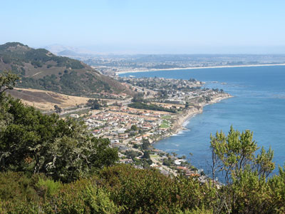
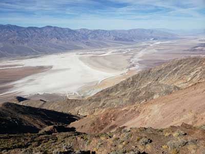

Discover the diverse landscapes and unique experiences that each region has to offer. From the rugged coastlines of the Pacific Northwest to the vast deserts of the Southwest, these itineraries showcase the distinct character and natural beauty of different geographical areas.
Mission Santa Barbara
Elisa Rolle, CC BY-SA 3.0, via Wikimedia Commons; Image Size Adjusted

Multi-State Itineraries
Experience the freedom of the open road as America’s iconic multi-state journeys connect breathtaking landscapes, diverse cultures, and unforgettable destinations into one seamless adventure.
Mission Santa Barbara
Elisa Rolle, CC BY-SA 3.0, via Wikimedia Commons; Image Size Adjusted
Northeast Itineraries
Explore classic New England through itineraries that connect coastal beauty, mountain scenery, historic towns, and rich American heritage.
Mission Santa Barbara
Elisa Rolle, CC BY-SA 3.0, via Wikimedia Commons; Image Size Adjusted
Mid-Atlantic Itineraries
Discover a region where history, culture, and world-class cities meet scenic coastlines and timeless small-town charm.

Pismo Beach, CA
hakkun, CC BY-SA 3.0, via Wikimedia Commons; Image Size Adjusted
.jpg){kind=link}
Southeast Itineraries
Experience the Southeast through itineraries that blend mountain adventures, coastal retreats, and some of America’s most significant historic destinations.
South Itineraries
Follow itineraries rich in music, cuisine, heritage, and southern hospitality across the diverse landscapes of the South.
Great Lakes Itineraries
Discover the Great Lakes region through itineraries that unite waterfront beauty, urban culture, and outdoor adventure.
Downtown Los Angeles sunset with Mount Baldy in the background
Downtown Los Angeles, CC BY-SA 4.0, via Wikimedia Commons; Image Size Adjusted

Midwest Itineraries
Experience the spirit of America’s heartland through itineraries filled with wide-open landscapes, frontier history, and authentic local culture.

Dantes View in Death Valley National Park
Southwest Itineraries
Explore towering peaks, ancient deserts, tropical islands, and world-famous national parks through unforgettable Southwest adventures.
California Itineraries
Discover the best of California through itineraries that blend iconic cities, scenic coastlines, legendary national parks, and unforgettable road-trip experiences.

Fisherman's Wharf at Monterey, CA
Amadscientist, CC BY-SA 3.0, via Wikimedia Commons; Image Size Adjusted

Northwest Itineraries
Journey through towering mountains, rugged coastlines, and wild landscapes on unforgettable Northwest adventures.
Fisherman's Wharf at Monterey, CA
Amadscientist, CC BY-SA 3.0, via Wikimedia Commons; Image Size Adjusted
U.S. Territories Itineraries
Experience America beyond the mainland through island itineraries filled with tropical beauty, cultural richness, and unforgettable landscapes.